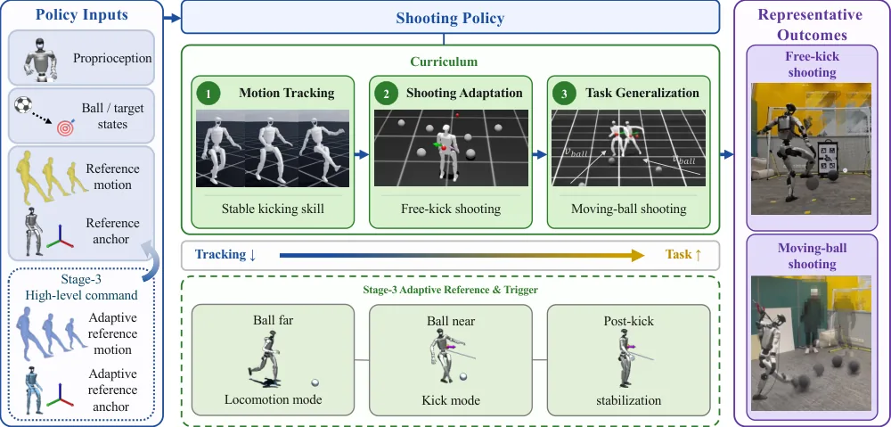
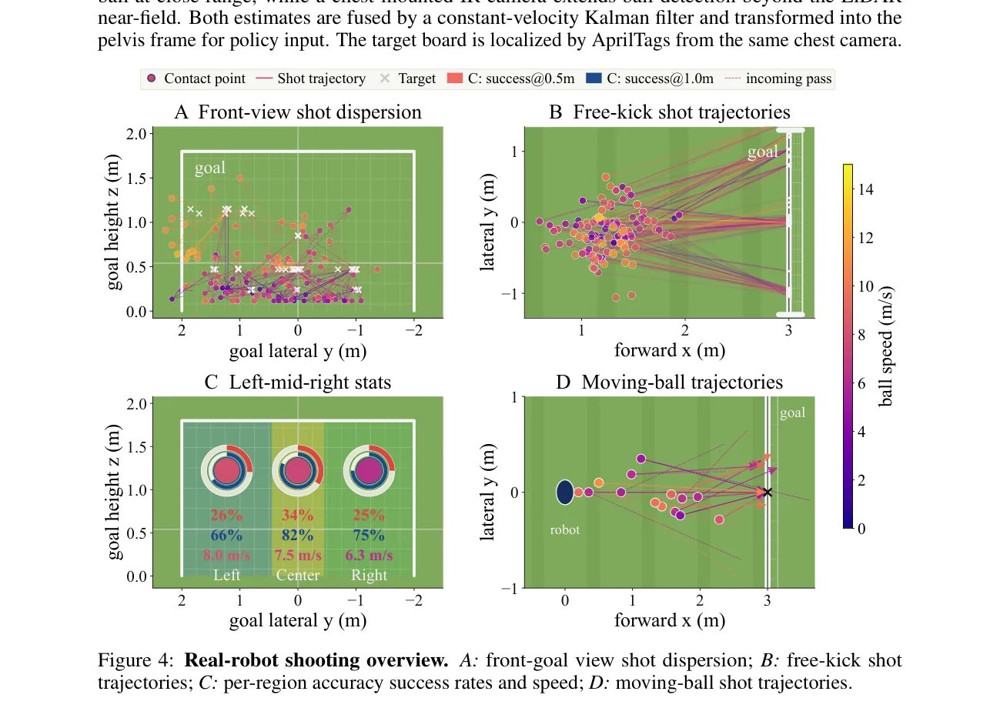
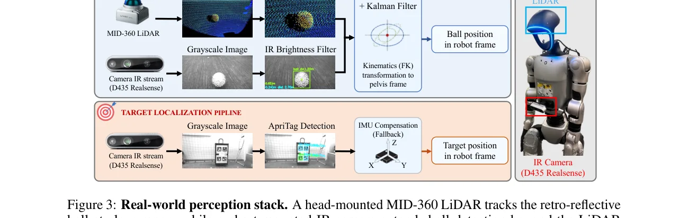
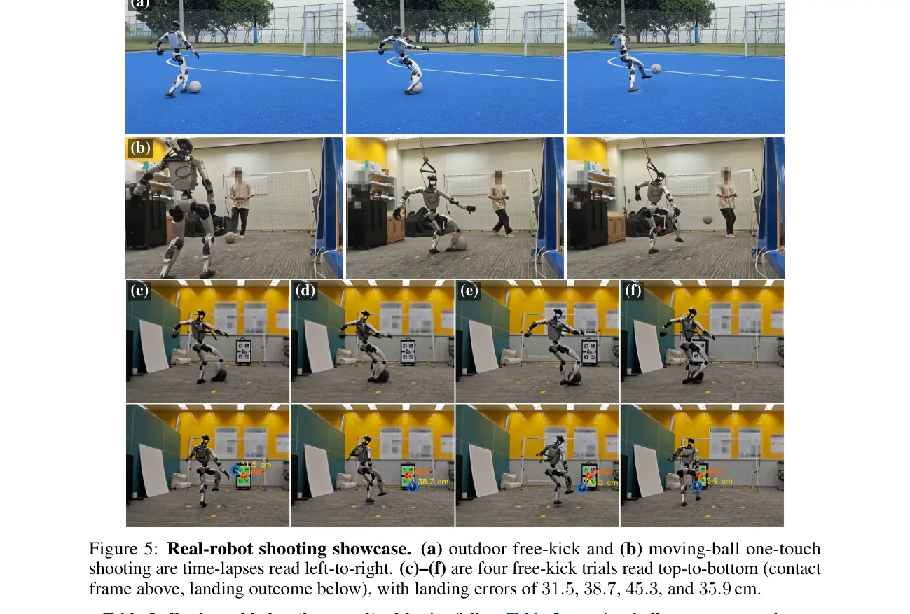

⚡速记层 · 思想 / 逻辑 / 方法
默认读完就走的一层——只讲思想、逻辑、方法；效果只作验证。要核对原文再进下面的「深读层」。
足球射门是「运动型人形交互」的一个浓缩 benchmark：要单腿支撑稳住、要把球踢得又准又快，而踢击是一次 sub-10ms 的高冲量碰撞，跟搬运/推门这种「持续接触」任务完全不同。现有人形踢球系统要么用 motion tracking RL 拿到稳定但只会复读固定参考，要么用 task-reward RL 却探索不出有效踢击。本文要同时拿下稳定、精准、力量、泛化。

- 诊断：tracking 给稳定但参考固定、不能选新接触点/方向/时机；task RL 给目标但从零探索不出平衡+摆腿+接触+瞄准。两者各缺一角。
- 对策：不二选一，而是按「每个信号能可靠提供什么」分三阶段，奖励权重从跟踪渐移到 task（wtask 0→0.8→1.0）。
- Stage 1 先用单条踢球参考学会稳定踢的全身协调（无球无 task 奖励）。
- Stage 2 加球+目标+射门奖励并随机球位，逼策略「适配」而非「复读」踢击（接触点/方向/速度都随采样变）。
- Stage 3 把动球射门拆成「locomotion 命令 + kick 触发」接口，让难点回到「走近 + 选起脚时机」，并近球时按项放松跟踪（脚速几乎放空、躯干姿态只松一点保平衡）。
- 验证：仿真误差 0.5×/球速 2.96× 优于 PAiD；真草地 onboard 拿下 0.73/0.86m 误差与 13.10 m/s 球速。
本体感知 + 球/目标状态 + 参考线索 → 单个 low-level 策略（PPO，3 阶段顺序训练）→ 50Hz 关节位置指令；Stage 3 由高层 planner 发 locomotion 命令 + kick 触发
- ① 三阶段课程：Tracking → Shooting Adaptation → Task Generalization，每阶段从上一阶段 checkpoint 热启动；跟踪权重↓、task 权重↑。
- ② 模块化高层接口：locomotion 命令 + kick-trigger 信号把动球射门变成「接近控制 + 接触时机决策」；训练用启发式 planner，部署可换人/神经高层而不重训 low-level。
- ③ 为高冲量接触定制奖励：Instant Interaction Reward + 弹道外推的密集落点奖励 + 近球 proximity 放松 + 击后稳定相。

仿真里 Stage 2 free-kick 比 PAiD 误差减半、球速近 3 倍；Stage 3 把同一策略推广到动球。真机草地全 onboard 复现高精度高球速。
| 设置 | RoboNaldo | PAiD [4] | 📍 |
|---|---|---|---|
| 仿真 free-kick 误差 | 0.899 m | 1.850 m | p.6 · Tab.2 |
| 仿真 free-kick 峰值球速 | 14.79 m/s | 4.99 m/s | p.6 · Tab.2 |
| 仿真动球 1m 成功率 | 63.3% | 9.3% | p.6 · Tab.2 |
| 真机 free-kick 误差 / 球速 | 0.73 m / 13.10 m/s | — | p.6–8 · Tab.3 |
- 同底座 · 互补：GRAIL 同样在 G1 上用 motion-tracking RL 做 loco-manip，但靠 3D 资产+视频批量造参考；RoboNaldo 只用一条参考，靠课程把策略推过「复读」边界——参考数量与适配方式正好互补。
- 同构接口 · 不同载荷：WholeBodyVLA 的 LMO 也是「离散高层指令 + 两阶段 curriculum 驱动 low-level RL」；RoboNaldo 的高层是 locomotion 命令 + kick 触发，载荷换成高冲量接触，且明确做「接口可换控制器」。
- 分层范式 · 上层不同：LeVERB 用 latent 指令接 RL 全身控制器；RoboNaldo 同样是高层指令 → low-level WBC，但上层是规则 planner、任务是 athletic 接触。
- 奖励路线之争：本文用 Instant Interaction Reward 取代 HDMI 的「位置×力」乘积奖励——后者对持续接触有效，但在 sub-10ms 踢击窗口会塌缩。
- 通才 ↔ 专才：Ψ0 走"一个基座覆盖通用 loco-manip"；RoboNaldo 反向——把单一高冲量 athletic 技能用课程 RL 压到极限，是通才基座之外的"专精技能"参照。
- RL 精修路线对照：π*0.6 用真机经验做 RL 自我改进；RoboNaldo 用仿真课程把跟踪策略推过固定参考的边界——同是"让策略超过初始行为"，一个靠真机经验、一个靠课程整形。
Track B（足式 / WBC / RL / sim2real）强命中：整篇是 G1 全身高冲量接触控制的 RL + 真机 sim2real。可直接借鉴：① motion-guided curriculum 这套「跟踪→task 权重迁移」配方，用于任何「需要稳定先验 + task 适配」的全身技能；② proximity-based tracking relaxation（近球时按项放松跟踪，脚速 µ=0.05、躯干姿态 µ=0.6）——一个兼顾稳定与力量/自由度的实用 trick；③ 高冲量接触的奖励整形（加性分组防塌缩 + 弹道外推密集化）；④ 大量 sim2real 落地细节（joint-index 重映射、10 步 warmup、域随机化、LiDAR/IR 反光球感知）。Track A（移动操作 VLA）弱相关：无 VLA/语言，仅「高层接口可换控制器」一句留了接 VLA 的口子。
◆核心观点 · 证据
每条 = 分型论点（常驻）+ 解读（常驻）+ 折叠的逐字原文/译文（📍真实页码，Ctrl-F 锚点）。9 观点 · 12 证据。
问题与洞察
射门 = 稳 + 准 + 力的高冲量难题
射门要单腿稳住、毫秒级脚-球接触、还要把球踢准踢快；接触只持续几毫秒，且击球的脚同时还在承重平衡——和搬/推这种持续接触任务本质不同。
📍 p.2 · §1 — 查逐字证据
Unlike sustained-contact tasks such as lifting or pushing, shooting relies on a brief, high-impulse collision generated by an end-effector that simultaneously contributes to whole-body support and balance.
两条 RL 路线各缺一角
motion tracking 给了稳定但参考固定，换不了接触点/方向/起脚时机；task-reward RL 知道球该去哪，却从零探索不出平衡+摆腿+接触+瞄准。
📍 p.1 · Abstract — 查逐字证据
Motion tracking-driven reinforcement learning (RL) provides stability in whole-body movement coordination, but a fixed reference makes it hard to adapt to varied ball positions and strike timings; in contrast, task reward-driven RL struggles to explore and discover valid kicks from scratch.
📍 p.2 · §1 — 查逐字证据
Motion priors make the robot stable enough to kick, but a fixed reference cannot choose a new contact point, aim direction, or strike time.
按信号能力排课程：单参考做脚手架
核心思想是「按每种学习信号能可靠提供什么来分阶段」：一条人类踢球参考当脚手架，随训练逐步把优化目标从跟踪移向射门表现。
📍 p.1 · Abstract — 查逐字证据
a three-stage motion-guided curriculum RL framework for high-impulse humanoid interaction. A single human-kick reference is used as a scaffold and progressively shifts optimization towards shooting performance.
📍 p.2 · §1 — 查逐字证据
The key idea is to stage the problem according to what each learning signal can reliably provide.
方法
三阶段：跟踪 → 适配 → 泛化
Stage 1 纯跟踪学稳定踢；Stage 2 加球/目标/射门奖励并随机球位，逼策略适配而非复读；Stage 3 用 locomotion 命令 + kick 触发把动球射门变成可学的接近+时机问题。
📍 p.4 · §3.2 Stage 2 — 查逐字证据
The policy must therefore adapt the demonstrated kick rather than simply replay it: the approach, contact point, strike direction, and impact speed all depend on the sampled ball and target.
📍 p.4 · §3.2 Stage 3 — 查逐字证据
At realistic pass speeds, useful foot–ball contact occurs within only a few control steps, while the motion reference still imposes a nominal swing phase.
模块化高层接口：可换控制器
locomotion 命令 + kick-trigger 信号构成高层 planner 与 low-level 策略之间的模块接口；训练用规则 planner，部署可换成另一个高层控制器（人/神经策略）而不重训 low-level。
📍 p.5 · §3.2 — 查逐字证据
The rule-based planner used during training can therefore be replaced at deployment by another high-level controller without retraining the low-level policy.
兼顾稳定与力量的三件套
为「既要踢得稳又要踢得猛」，本文用三招：① Instant Interaction Reward 对接触全生命周期分别给奖防塌缩；② 近球时按项放松跟踪（脚速几乎放空、躯干姿态只松一点保平衡）；③ 击后稳定相，惩罚那些「踢得分高但踢完就摔」的不稳冲击。
📍 p.5 · §3.3 — 查逐字证据
HDMI [14] uses a position–force product, which is effective for sustained contact but collapses for soccer shooting: meaningful foot–ball contact lasts only 3–5 physics steps at 200 Hz.
📍 p.13 · §B — 查逐字证据
Feet linear velocity is suppressed to µ=0.05, giving the policy near-total freedom in ankle placement during contact; body orientation is only reduced to µ=0.6, preserving balance during the lean.
📍 p.4 · §3.2 — 查逐字证据
a post-kick stabilization reference is held for Tstab steps before resetting the clock, discouraging unstable impacts that score high shot rewards but fail immediately after the kick.
结果与边界
仿真：误差 0.5×、球速 2.96× 优于 PAiD
Stage 2 free-kick 5m 外平均误差 0.899m、65.5% 落在 1m 内、球速 14.79 m/s——误差 0.5×、球速 2.96× 优于前作；Stage 3 把高球速带到动球射门（1m 成功率 63.3%）。消融显示每个阶段、自适应采样与稳定相都不可省。
📍 p.2 · §1 — 查逐字证据
Stage 2 free-kicks achieve 0.899 m average error from 5 m, 65.5% of the shot within 1 m error, and 14.79 m/s ball speed, giving 0.5× the error and 2.96× the speed of previous work; Stage 3 preserves high-power moving-ball shooting with 63.3% shots within 1 m error.
📍 p.6 · §4 — 查逐字证据
Removing adaptive sampling or stablization phase severely disrupts the robustness and stability ... whose alive rate drops from 98.8% to 32.8% and 24.4% ... Replacing our instant interaction reward with HDMI-style sparser ones drops contact accuracy performance, with free-kick success from 28.8% to 2.5%.
真草地全 onboard：0.73m、13.10 m/s
Unitree G1 全程 onboard（无 mocap/外部估计），LiDAR+IR 感知反光球。free-kick 136 试 124 有效（91.2% 触球、全存活），0.73m 平均误差、7.42 m/s 球速；动球 27 试 20 有效，0.86m 误差。峰值球速 13.10 m/s 达职业 59–71%。
📍 p.6 · §5.2 — 查逐字证据
Out of 136 recorded free-kick attempts, the robot launches 124 valid shots, corresponding to 91.2% contact, and remains alive in all trials. Conditioned on valid launches, 31.5% and 80.6% of shots land within 0.5 m and 1.0 m of the target, respectively, with a mean radial error of 0.73 m and a mean ball speed of 7.42 m/s.
📍 p.8 · §5.2 — 查逐字证据
Compared to professional soccer players, RoboNaldo reaches 13.10 m/s peak ball speed, 59–71% of reported professional open-play shot velocities [7], indicating high-impulse contact rather than conservative low-velocity strikes.



单参考 + 手工触发 + 反光球
目前只靠一条参考踢球动作和一个手工设计的高层触发策略来做阶段切换与起脚时机，难扩展到需要多技能与自主决策的复杂场景；动球的主要退化来自起脚触发的 sim-to-real gap 与不完美的人类传球。感知也绑死反光球。
📍 p.8 · §6 — 查逐字证据
RoboNaldo currently relies on a single reference kick motion and a handcrafted high-level trigger policy for stage transitions and kick timing. This limits its ability to handle richer soccer scenarios that require multiple skills and autonomous decision making.
📍 p.7 · §5.2 — 查逐字证据
the main degradation in the moving-ball setting comes from the sim-to-real gap of kick-timing trigger and imperfect incoming passes from human.
⎘开源状态 · 实时核查（截至 2026-06）
- 项目页
- 在线 opendrivelab.com/RoboNaldo（含演示视频）
- 代码
- 未上线 项目页指向
github.com/opendrivelab/RoboNaldo，但该仓库当前返回 404；论文正文称 joint-index 重映射「列在 released code」，即代码已承诺但尚未公开 - 权重 / 数据
- 未提供 无 checkpoint / 数据集发布说明；无 license
截至 2026-06-16：仅项目页 + arXiv + 视频可得；GitHub 仓库 404，代码/权重均不可下载。归类 none（承诺开源但尚未兑现）。后续应重查仓库是否上线。
📍 p.1 / p.15 — 查逐字证据
Project page: https://opendrivelab.com/RoboNaldo. ... Getting this permutation wrong silently produces a plausible-looking but non-functional policy, so we list it explicitly in the released code.
⚖批判 · 评级
把「tracking 稳定 vs task 精准」这一长期两难，用一套清晰的权重迁移课程兼顾，并在真草地全 onboard 复现出高精度+高球速（首个同时拿下点级精度/球速/动球/室外的人形射门系统）。proximity-based tracking relaxation、高冲量接触奖励整形、密集落点弹道外推、joint-index 重映射等都是可直接搬走的工程招法。消融把每个组件钉到具体失效模式。
高层触发是手工规则、只用单条参考动作，限制向多技能/对抗场景迁移（见局限9）；消融全在仿真、真机无方差/置信区间；动球真机样本仅 27 试；代码承诺但仓库 404、非同行评审。
评级：Valuable 聚焦单一 athletic 任务、重度建立在 motion-tracking RL + 课程学习之上，故非 Important/Breakthrough；但机制干净、真机执行扎实、对足式 WBC 工程师有直接可复用的方法与落地细节。